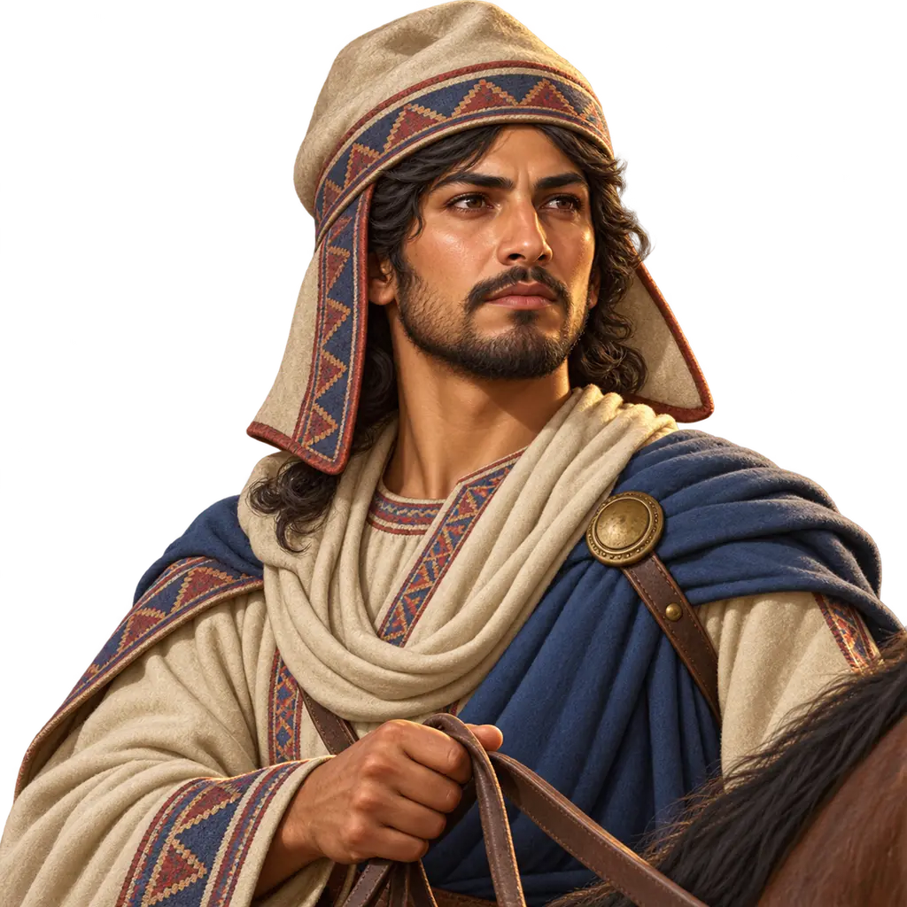
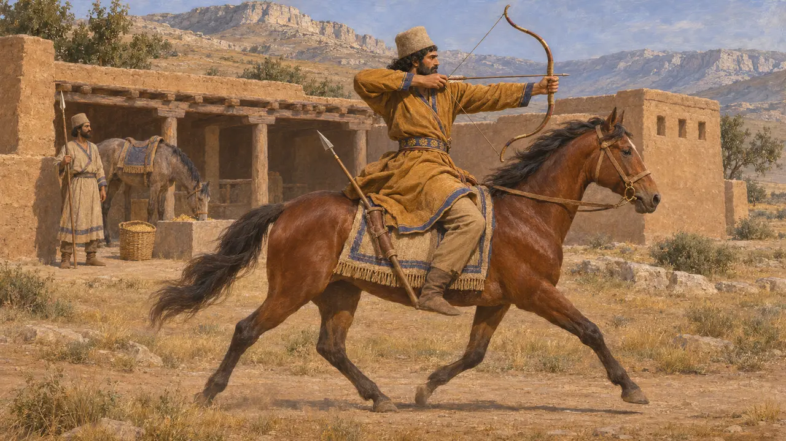
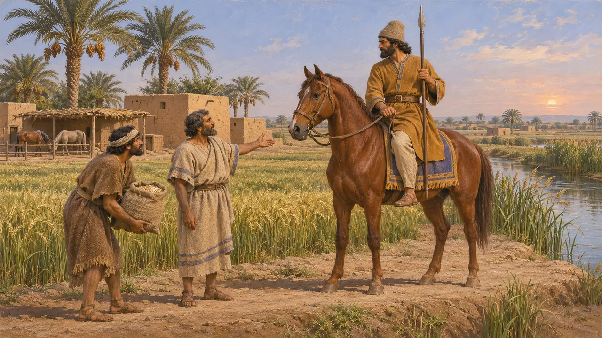
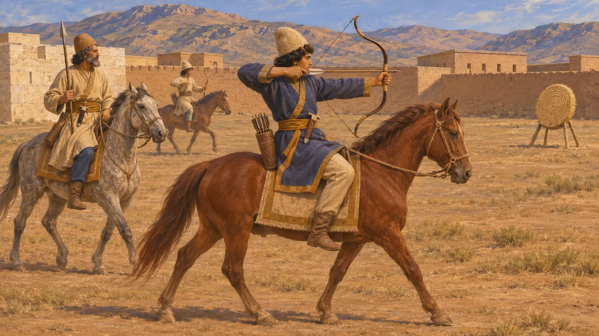
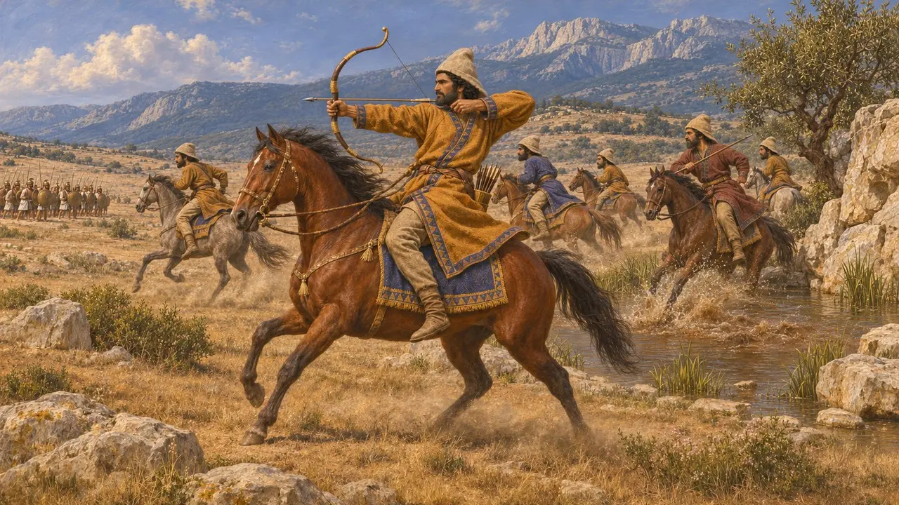
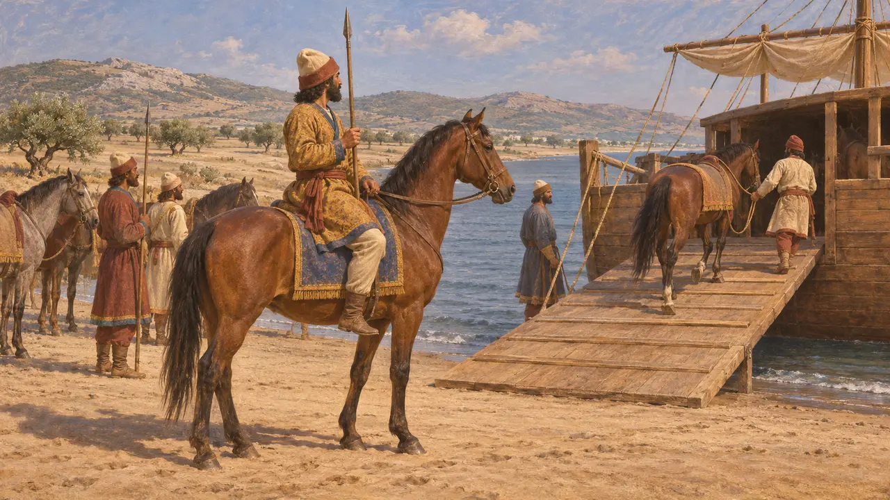
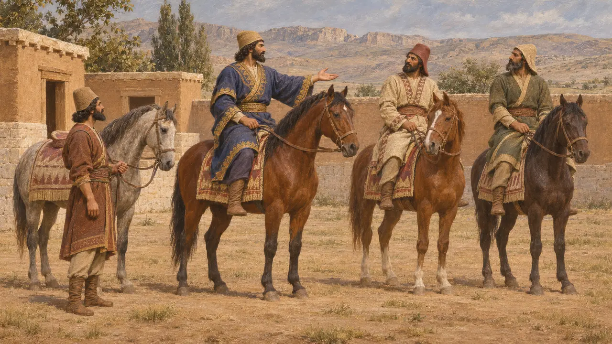

خيّال فارسي
الجنود الخيّالة في جيش الملك الهخامنشي، القرنان 6-5 ق.م
كان الخيّالة الفرس الذراع الراكبة لجيش الملك، يُجنَّدون من النبلاء الفرس ومن رجال حازوا الأرض مقابل الخدمة. وكانوا يقاتلون في الغالب بالقوس والحربة، يقتربون للرمي ثم يتراجعون قبل أن يدركهم المشاة. وفي بلاتيا سنة 479 ضيّقوا الخناق على الجيش اليوناني أيامًا متتالية.
في اللعبة: تُظهر اللعبة الخيّالة الفرس فرسانًا سريعين يلاحقون الرماة والغزاة ويُهزمون أمام الرمّاحين. وفي هذا تبسيط للتاريخ: فكثير من الفرسان الفرس كانوا رماة خيّالة ورماة حراب يضايقون المشاة من بعيد.

بارع راجلًا وفارسًا
في السجلاتعلى ضريحه في نقش رستم، أمر داريوس أن يُكتب أنه فارس بارع، ورامٍ ورمّاح بارع راجلًا وراكبًا. وكانت الفروسية والرماية المهارتين اللتين يُظهر بهما النبيل الفارسي قدره. وتسجّل ألواح تحصينات برسبوليس حبوبًا صُرفت علفًا للخيول، ومنها خيول المسافرين على الطرق الملكية.
DNb; Persepolis Fortification tablets

أرض مُلزَمة بتقديم حصان
في السجلاتتسجّل أرشيفات الأعمال البابلية، ولا سيّما نصوص موراشو، قطعًا من الأرض تُسمّى «أرض الحصان» إلى جانب «أرض القوس» و«أرض العربة». وكانت جماعات من الحائزين تتسلّم هذه الأرض وتلتزم بالخدمة العسكرية عنها، أو تدفع فضةً بدلًا منها. وتعود هذه النصوص إلى أواخر القرن الخامس ق.م، بعد عام 479 ق.م، لكنها تُظهر كيف أعالت الإمبراطورية جنودها، ومنهم الخيّالة.
Murashu archive; M. Stolper, Entrepreneurs and Empire, 1985

هيرودوت عن التدريب والسلاح
رواية قديمةيقول هيرودوت إن صبيان الفرس كانوا يتعلّمون ثلاثة أمور منذ الخامسة حتى العشرين: ركوب الخيل والرمي بالقوس وقول الصدق. وفي تعداده لجيش خشايارشا يذكر أن الخيالة الفرس حملوا أسلحة المشاة نفسها، أي القوس والرمح القصير والخنجر، وإن كان بعضهم يعتمر خوذات من البرونز أو الحديد المطروق.
Herodotus 1.136; 7.84

الخيالة في بلاتيا
رواية قديمةيقول هيرودوت إن الفرسان بقيادة ماسيستيوس هاجموا اليونانيين موجةً بعد موجة حتى قُتل ماسيستيوس. وبعد ذلك واصلت الخيالة هجماتها، ترمي السهام والحراب من على ظهور الخيل فلا يتمكن اليونانيون من الالتحام بها. وأفسدت كذلك نبع غارغافيا الذي كان الجيش اليوناني يشرب منه.
Herodotus 9.20-25; 9.49

الخيّالة الغائبة في ماراثون
متنازع عليهيقول هيرودوت إن هيبياس قاد الفرس إلى ماراثون لأن أرضها تلائم الخيّالة، ومع ذلك لا دور للخيّالة في روايته للمعركة. ويرى بعض المؤرخين أن الخيول كانت قد أُعيدت إلى السفن أو أُرسلت إلى موضع آخر، ويربط معجم «السودا» البيزنطي عبارة «الخيّالة غائبون» بماراثون. ويرى آخرون أن قلّة قليلة من الخيول أُنزلت أصلاً. ولا يحسم أي مصدر المسألة.
Herodotus 6.102; 6.112; Suda

قورش عند زينوفون يجعل الفرس فرسانًا
أسطورة لاحقةكتب زينوفون «تربية قورش» في القرن الرابع ق.م حكايةً أخلاقية عن المُلك، لا تاريخًا. وفيها يُقنع قورش الفرس، وقد كانوا يقاتلون مشاة، بأن يصيروا فرسانًا، ويجعل من العار أن يُرى فارسيّ ذو مكانة ماشيًا على قدميه. والقصة أقرب إلى تصوّرات اليونانيين عن فارس منها إلى سجلّ عهد قورش.
Xenophon, Cyropaedia 4.3
المصادر
- Herodotus, Histories 1.136, 6.102, 6.112, 7.84, 9.20-25, 9.49
- DNb (Darius's tomb inscription, Naqsh-e Rostam)
- R. T. Hallock, Persepolis Fortification Tablets, 1969
- M. Stolper, Entrepreneurs and Empire, 1985
- P. Briant, From Cyrus to Alexander, 2002
- Xenophon, Cyropaedia 4.3